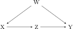
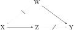
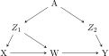
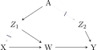
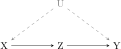
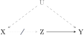
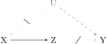
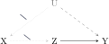

do-calculus
do-calculus
do(•)
TODO: Add citations to Pearl and others from my blog post
Pearl’s do-calculus provides a set of algebraic rules for eliminating interventional \operatorname{do}(\cdot) operators from causal expressions, allowing us to estimate causal effects from observational data.
Important notation for graph surgery
Each do-calculus rule works by checking if specific nodes are d-separated in modified versions of the original DAG.
There’s a whole set of special notation that gets used to make these temporarily modified graphs. I like to think of these as surgical instructions that tell us to cut specific arrows into or out of nodes.
Graphs
The first bit of notation is easy. A DAG is defined as a graph G. Phew. See Figure 1 (a) for an example DAG.
Overlines and underlines
The next bit of notation is new and involves adding lines above and below node names, like \overline{X} and \underline{X}.
I imagine this line notation like a wall:
- If the wall is on top of X like \overline{X}, you can’t draw any arrows going into it, so you delete any arrows going in to it
- If the wall is on the bottom of X like \underline{X}, you can’t draw any arrows going out of it, so you delete any arrows going out of it
This line notation is added as a subscript to G:
- G_{\overline{X}}: G with all arrows going into X deleted; see Figure 1 (b)
- G_{\underline{X}}: G with all arrows going out of X deleted; see Figure 1 (c)


These modifications can also be combined. The full rules of do-calculus use graphs like G_{\overline{X}\underline{Z}} (arrows into X and out of Z both removed) and G_{\overline{X}\overline{Z}} (arrows into X and into Z both removed). Figure 2 shows these with a four-node DAG:



Ancestors
There’s one final bit of notation that lets us refer to ancestors of nodes—like in A \rightarrow B, A is an ancestor or predecessor of B.
We use Z(W) to refer to any Z nodes that aren’t ancestors of W in G_{\overline{X}}. In some applications of do-calculus rules, we need to look at a modified graph like G_{\overline{X}\overline{Z(W)}}. Instead of removing incoming arrows to every node in Z like we would with something like G_{\overline{Z}}, we only cut arrows for Z nodes that are not ancestors of any W node in G_{\overline{X}}. Nodes in Z that are ancestors of W in G_{\overline{X}} keep their incoming arrows intact—severing them would alter the distribution of W, distorting the conditional we depend on.
Figure 3 illustrates this with two Z nodes. Z_1 causes W directly, so in G_{\overline{X}} it is an ancestor of W and is excluded from Z(W). Z_2 has no path to W in G_{\overline{X}}, so it is included in Z(W) and its incoming arrows are removed.


The rules of do-calculus
Formal rules
With this special notation for graph analysis, we can finally look at the three rules of do-calculus. In their most general form, they apply to any disjoint sets of variables X, Y, Z, and W in a causal DAG G:
Rule 1 (Insertion/deletion of observations) An observed variable Z can be added to or removed from a conditional if Y and Z are d-separated given X and W in G_{\overline{X}}:
P(y \mid \operatorname{do}(x), z, w) = P(y \mid \operatorname{do}(x), w) \quad \text{if } (Y \perp Z \mid X, W)_{G_{\overline{X}}}
Rule 2 (Action/observation exchange) An intervention \operatorname{do}(z) can be replaced with an observation z (or vice versa) if Y and Z are d-separated given X and W in G_{\overline{X}\underline{Z}}:
P(y \mid \operatorname{do}(x), \operatorname{do}(z), w) = P(y \mid \operatorname{do}(x), z, w) \quad \text{if } (Y \perp Z \mid X, W)_{G_{\overline{X}\underline{Z}}}
Rule 3 (Insertion/deletion of actions) An intervention \operatorname{do}(z) can be dropped entirely if Y and Z are d-separated given X and W in G_{\overline{X}\overline{Z(W)}}:
P(y \mid \operatorname{do}(x), \operatorname{do}(z), w) = P(y \mid \operatorname{do}(x), w) \quad \text{if } (Y \perp Z \mid X, W)_{G_{\overline{X}\overline{Z(W)}}}
where Z(W) is the set of Z nodes that are not ancestors of any node in W in G_{\overline{X}}.
In all three rules, X, Y, Z, and W are generic placeholders for any disjoint sets of variables—X represents existing interventions, Z is the variable being added, removed, or exchanged, Y is the outcome, and W is an optional conditioning set. Any of these sets may be empty.
Simplified rules for single-confounder DAGs
For the common case of a single intervention on X with a single outcome Y and no additional conditioning (W = \varnothing), Rules 1–3 can reduce to simpler forms. In these versions, the variable names refer to specific nodes in the DAG rather than generic placeholders:
Simplified Rule 1 (Ignore an observation) We can ignore an extra observed variable Z if it is d-separated from Y in G_{\overline{X}} (the graph with arrows into X removed):
P(y \mid \operatorname{do}(x), z) = P(y \mid \operatorname{do}(x)) \quad \text{if } (Y \perp Z \mid X)_{G_{\overline{X}}}
Simplified Rule 2 (Treat an intervention as an observation) We can replace \operatorname{do}(x) with simply observing x if, after removing X’s outgoing edges, X and Y are d-separated given the covariates Z:
P(y \mid \operatorname{do}(x), z) = P(y \mid x, z) \quad \text{if } (Y \perp X \mid Z)_{G_{\underline{X}}}
Simplified Rule 3 (Ignore an intervention) We can drop \operatorname{do}(x) entirely if, after removing X’s incoming edges, X and Y are d-separated given the covariates:
P(y \mid \operatorname{do}(x), z) = P(y \mid z) \quad \text{if } (Y \perp X \mid Z)_{G_{\overline{X}}}
Note 1: These formulas are flexible
With all three of these rules, the variables names are interchangeable depending on the relationships in the DAG: X, Y, and Z can stand for any sets of variables. Additionally, the conditioning set (the z term) could be empty (e.g. Z \rightarrow Y with no other nodes involved).
Similarly, notice how the (Y \perp X \mid Z)_{G_{\underline{X}}} in Simplified Rule 2 looks slightly different than the (Y \perp Z \mid X, W)_{G_{\overline{X}\underline{Z}}} in Rule 2. That’s because the variable names swap roles. In the general rule, Z is a placeholder for whatever variable is being exchanged, but in the simplified version, we’re exchanging \operatorname{do}(x), so we use X. Additionally, Z (the confounder) replaces the general W conditioning set, and there are no other existing interventions, so the G_{\overline{X}} modification disappears.
Backdoor adjustment
Let’s say that we’re interested in the causal effect of X on Y, but we have a confounder Z that opens a backdoor path X \leftarrow Z \rightarrow Y, creating a DAG that looks like this:
Our target estimand is P(y \mid \operatorname{do}(x)),1 or the distribution of Y in a world where we intervene to set X = x. However, that \operatorname{do}(\cdot) operator represents a hypothetical intervention where we can set X = x directly, breaking its usual causes. In an experimental setting, that works fine—we can randomly assign people to get assigned to different values of x. But in observational data, we don’t have control over treatment assignment and we cannot intervene.
We can use the simplified rules of do-calculus to eliminate the \operatorname{do}(x) and estimate the causal effect from observational data.
Deriving the backdoor formula
With the rules of do-calculus, we can take our estimand of interest—the effect of X on Y, or P(y \mid \operatorname{do}(x))—and transform it into a do-free statement that deals with the confounding from Z.
Step 1: Incorporate Z into P(y \mid \operatorname{do}(x))
To adjust for the confounder Z, we need to incorporate it into the formula for our estimand. We do this by considering the joint distribution of Y and Z in a world where X occurs through an intervention, or P(y, z \mid \operatorname{do}(x)). This gives us the probability that Y = y and Z = z simultaneously when we force X = x.
To get our target P(y \mid \operatorname{do}(x)) from this joint distribution, we marginalize over Z, or sum over all possible values of Z:
{\color{blue} P(y \mid \operatorname{do}(x))} = \sum_z {\color{red} P(y, z \mid \operatorname{do}(x))} \tag{1}
Our estimand now includes Z, but this joint distribution equation is hard to work with. We need to break it smaller, more manageable pieces and separate y and x. Using the chain rule of probability (which applies to interventional distributions just as it does to observational ones), we can expand out Equation 1:
{\color{red} P(y, z \mid \operatorname{do}(x))} = {\color{orange} P(y \mid \operatorname{do}(x), z) \times P(z \mid \operatorname{do}(x))} \tag{2}
We can substitute that expanded version back into Equation 1:
{\color{blue} P(y \mid \operatorname{do}(x))} = \sum_z {\color{orange} P(y \mid \operatorname{do}(x), z) \times P(z \mid \operatorname{do}(x))} \tag{3}
Or without colors:
P(y \mid \operatorname{do}(x)) = \sum_z P(y \mid \operatorname{do}(x), z) \times P(z \mid \operatorname{do}(x)) \tag{4}
Now we have two \operatorname{do}(\cdot)-based quantities that we cannot directly estimate from data:
- P(y \mid \operatorname{do}(x), z): “Given that we intervene on X and observe Z = z, what’s the probability of Y = y?”
- P(z \mid \operatorname{do}(x)): “In a world where we intervene on X, what’s the probability that Z = z?”
Our next job is to use the rules of do-calculus to remove those \operatorname{do}(\cdot) interventions.
Step 2: Applying Rule 2 to P(y \mid \operatorname{do}(x), z)
According to Simplified Rule 2, we can replace an interventional \operatorname{do}(x) with a regular observed x if we meet specific conditions in G_{\underline{X}}, or the graph with all arrows out of X deleted: Y must be d-separated from X, given the covariates Z. Here’s what G_{\underline{X}} looks like:

The only path between X and Y in G_{\underline{X}} is X \leftarrow Z \rightarrow Y. Adjusting for Z blocks this path, so (Y \perp X \mid Z)_{G_{\underline{X}}} holds. That means that we can swap out \operatorname{do}(x) for a regular observed x:
P(y \mid \operatorname{do}(x), z) = P(y \mid x, z)
Step 3: Applying Rule 3 to P(z \mid \operatorname{do}(x))
According to Simplified Rule 3, we can remove a \operatorname{do}(\cdot) operator if we meet specific conditions in G_{\overline{X}}, or the graph with all arrows into X deleted: Z must be d-separated from X in G_{\overline{X}}.
NoteWait, this doesn’t exactly match Rule 3??
Simplified Rule 3 officially talks about independence between X and Y, but here we’re talking about X and Z. What gives?
Remember from Tip 1 that these variable names are flexible. We don’t have to look only at X and Y—any nodes can stand in for those. In this case, we care about the relationship between Z and X, where the “outcome” variable is Z instead of Y.
Additionally, technically Simplified Rule 3 includes conditioning set z: P(y \mid \operatorname{do}(x), z). However, the z term in the formula can be empty. In this case, Y is related to X and Z as a collider and, accordingly, we don’t adjust for it, so we can leave it out of the equation. Thus, we can take this official expression from Rule 3:
P(y \mid \operatorname{do}(x), z)
and modify it by
- switching the “outcome” variable to Z, so y becomes z, and
- using an empty conditioning set, so the “z” in P(y \mid \operatorname{do}(x), z) disappears
…resulting in
P(z \mid \operatorname{do}(x))
for this special case.

The only path between Z and X in G_{\overline{X}} is Z \rightarrow Y \leftarrow X. In this case, Y is a collider and since we don’t adjust for or condition on colliders, that pathway is blocked and (Z \perp X)_{G_{\overline{X}}} holds. That means that we can completely eliminate \operatorname{do}(x):
P(z \mid \operatorname{do}(x)) = P(z)
Step 4: Final formula
Finally we can substitute both do-free results back into our original expression from Equation 4:
\begin{aligned} P(y \mid \operatorname{do}(x)) &= \sum_z \underbrace{P(y \mid \operatorname{do}(x), z)}_{\text{Rule 2}} \times \underbrace{P(z \mid \operatorname{do}(x))}_{\text{Rule 3}} \\ &= \sum_z \underbrace{P(y \mid x, z)}_{\text{Rule 2}} \times \underbrace{P(z)}_{\text{Rule 3}} \end{aligned}
This gives us the official backdoor adjustment formula:
\boxed{\rule{0pt}{1.5em}\;\; P(y \mid \operatorname{do}(x)) = \sum_z P(y \mid x, z) \times P(z) \;\;} \tag{5}
All \operatorname{do}(\cdot) operators are gone and every term on the right-hand side is an ordinary observational value. This means that we can estimate the causal effect of X on Y from observational data as long as we measure and adjust for Z.
Front-door adjustment
The backdoor criterion requires that we can observe and adjust for all confounders. But what if the confounder is unobserved? It turns out that if we can observe a mediator Z that fully mediates X’s effect on Y, we can still identify the causal effect using the front-door criterion. This derivation is a little more complex, but still doable with the rules of do-calculus.
Consider a DAG where:
- X causes Y entirely through a mediator Z (no direct X \rightarrow Y edge)
- There is an unobserved confounder U that affects both X and Y
- U does not affect Z directly

Because U is unobserved, we cannot adjust for it—it’s a confounder, but we cannot use backdoor adjustment. But we can get around that by using a front-door approach.
Deriving the front-door formula
Our target estimand is again P(y \mid \operatorname{do}(x)). Unlike the backdoor case, the simplified rules are not sufficient here—we need the full rules, which handle multiple simultaneous interventions and combined graph modifications like G_{\overline{X}\underline{Z}}.
Step 1: Marginalize over Z
As with the backdoor derivation, we start by incorporating Z into our estimand. We marginalize over Z and expand using the chain rule:
P(y \mid \operatorname{do}(x)) = \sum_z P(y \mid \operatorname{do}(x), z) \times P(z \mid \operatorname{do}(x)) \tag{6}
We now need to eliminate that interventional \operatorname{do}(x) from both terms.
Step 2: Simplify P(z \mid \operatorname{do}(x)) with Rule 2
Rule 2 says we can replace \operatorname{do}(x) with observing x if Z and X are d-separated in the graph with arrows out of X removed.

In G_{\underline{X}}, the only path between X and Z goes through U: X \leftarrow U \rightarrow Y \leftarrow Z. But Y is a collider on this path and we don’t condition on it, so the path is blocked. Therefore (Z \perp X)_{G_{\underline{X}}} holds, and:
P(z \mid \operatorname{do}(x)) = P(z \mid x)
Step 3: Simplify P(y \mid \operatorname{do}(x), z)
This term is trickier. We need to replace \operatorname{do}(x) with something we can work with. The strategy is to first convert the observation of z into an intervention \operatorname{do}(z), then drop \operatorname{do}(x), and finally eliminate \operatorname{do}(z) via backdoor adjustment.
Step 3a: Apply Rule 2 (in reverse) to convert observation z to \operatorname{do}(z).
Rule 2 tells us that an intervention \operatorname{do}(z) can be replaced with an observation z (or vice versa) if a d-separation condition holds. Here we want to go from observing z to intervening \operatorname{do}(z), so we check the condition for the reverse direction (because Rule 2 is an equality, it’s true in either direction, so we can look at it either way):
P(y \mid \operatorname{do}(x), z) = P(y \mid \operatorname{do}(x), \operatorname{do}(z)) \quad \text{if } (Y \perp Z \mid X)_{G_{\overline{X}\underline{Z}}}
We need to verify that Y and Z are d-separated given X in the graph where we:
- Remove arrows into X (the \overline{X} modification)
- Remove arrows out of Z (the \underline{Z} modification)

In G_{\overline{X}\underline{Z}}, the remaining edges are X \rightarrow Z and U \rightarrow Y (since U \rightarrow X is removed by \overline{X} and Z \rightarrow Y is removed by \underline{Z}). There is no path connecting Z and Y at all, so (Y \perp Z \mid X)_{G_{\overline{X}\underline{Z}}} trivially holds. We can make the exchange:
P(y \mid \operatorname{do}(x), z) = P(y \mid \operatorname{do}(x), \operatorname{do}(z))
Since Rule 2 is an equivalence (P(y \mid \operatorname{do}(x), \operatorname{do}(z), w) = P(y \mid \operatorname{do}(x), z, w) when the condition holds), it works symmetrically—if the condition holds, we can replace an observation with an intervention just as easily as the other way around.
Step 3b: Apply Rule 3 to drop \operatorname{do}(x).
Rule 3 says we can remove an intervention \operatorname{do}(x) if a d-separation condition holds in a specially modified graph:
P(y \mid \operatorname{do}(x), \operatorname{do}(z)) = P(y \mid \operatorname{do}(z)) \quad \text{if } (Y \perp X \mid Z, W)_{G_{\overline{Z}\overline{X(W)}}}
In our expression P(y \mid \operatorname{do}(x), \operatorname{do}(z)), there are no observed conditioning variables, so W = \varnothing. Since W is empty, no node in X can be an ancestor of a W-node, meaning X(W) = X—all nodes in X qualify for having their incoming arrows removed. The graph we check is therefore G_{\overline{Z}\overline{X}}, with incoming arrows into both Z and X removed:

In G_{\overline{Z}\overline{X}}, the edges U \rightarrow X and X \rightarrow Z are both removed. X is completely isolated—no edges connect it to any other node—so X and Y are trivially d-separated regardless of conditioning. Therefore (Y \perp X \mid Z)_{G_{\overline{Z}\overline{X}}} holds, and by Rule 3:
P(y \mid \operatorname{do}(x), \operatorname{do}(z)) = P(y \mid \operatorname{do}(z))
By combining steps 3a and 3b, we get this:
P(y \mid \operatorname{do}(x), z) = P(y \mid \operatorname{do}(z))
Step 3c: Eliminate \operatorname{do}(z) via backdoor adjustment.
Now we need to turn P(y \mid \operatorname{do}(z)) into purely observational terms. In the original DAG, there is a backdoor path from Z to Y: Z \leftarrow X \leftarrow U \rightarrow Y. We can block this by adjusting for X (which is observed). Conditioning on and marginalizing over X:
P(y \mid \operatorname{do}(z)) = \sum_{x'} P(y \mid z, x') \times P(x')
NoteWhy can we adjust for X here?
When estimating the effect of Z on Y, X acts as a confounder (it causes Z and, through U, is associated with Y). Conditioning on X blocks the backdoor path Z \leftarrow X \leftarrow U \rightarrow Y. This works even though U is unobserved—X is sufficient because it intercepts the chain between U and Z.
More formally, we apply Rule 2 to get P(y \mid \operatorname{do}(z), x') = P(y \mid z, x') (since X blocks all backdoor paths from Z to Y), and Rule 3 to get P(x' \mid \operatorname{do}(z)) = P(x') (since there is no directed path from Z to X).
Step 4: Final formula
Finally, we can substitute everything back into Equation 6:
\begin{aligned} P(y \mid \operatorname{do}(x)) &= \sum_z \underbrace{P(y \mid \operatorname{do}(x), z)}_{\text{Step 3}} \times \underbrace{P(z \mid \operatorname{do}(x))}_{\text{Step 2}} \\ &= \sum_z \underbrace{\sum_{x'} P(y \mid z, x') \times P(x')}_{\text{Backdoor on } Z \to Y} \times \underbrace{P(z \mid x)}_{\text{Rule 2}} \end{aligned}
This gives us the official front-door adjustment formula:
\boxed{\rule{0pt}{1.5em}\;\; P(y \mid \operatorname{do}(x)) = \sum_z P(z \mid x) \sum_{x'} P(y \mid x', z) \times P(x') \;\;} \tag{7}
All \operatorname{do}(\cdot) operators are gone and term on the right-hand side is an ordinary observational quantity. We can then use this in two steps:
- P(z \mid x): Estimate how X affects Z. This is unconfounded because U doesn’t directly affect Z.
- \sum_{x'} P(y \mid x', z) \times P(x'): Estimate how Z affects Y, adjusting for X to block the backdoor path through U.
By chaining these two unconfounded estimates together, we recover the full causal effect of X on Y despite never observing U.
Footnotes
Strictly speaking, that’s not actually true! P(y \mid \operatorname{do}(x)) is an interventional distribution, while causal effects or estimands are contrasts of that distribution, like E[Y \mid \operatorname{do}(x = 1)] - E[Y \mid \operatorname{do}(x = 0)]. But for the sake of simplicity, we’ll pretend.↩︎